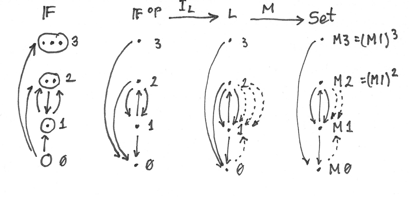
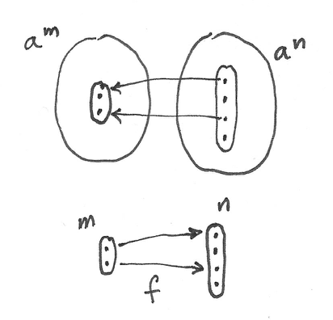

如今谈函数式编程，不可能不提 Monad。但另一个平行宇宙也许存在：Eugenio Moggi 偶然把注意力投向了 Lawvere 理论，而不是 Monad。让我们探索那个宇宙。
通用代数
在不同抽象层级上描述代数有许多方式。我们试图找到一种通用语言，描述幺半群、群、环等结构。最简单的层级上，这些构造都定义集合元素上的一些运算（operation），再规定运算必须满足的定律（law）。例如，幺半群可用满足结合律的二元运算定义，另有单位元与单位律。稍加想象，可以把单位元改看成零元运算——不接受参数、返回集合中特殊元素的运算。要谈群，就加入一个接受元素并返回其逆元的一元运算符，以及相应的左右逆元律。环定义两个二元运算符和更多定律，以此类推。
整体图景是：代数由若干取不同 n 值的 n 元运算，以及一组等式恒等式定义。这些恒等式都带全称量化；结合律方程必须对三个元素的所有可能组合成立，其他定律同理。
顺带一提，这会把域排除出去，原因很简单：零（加法单位元）没有乘法逆元。域的逆元律无法全称量化。
若用态射替代运算（函数），通用代数的定义可扩展到 Set 以外的范畴。我们不再选集合，而选对象 a（称为泛型对象，generic object）。一元运算就是 a 的自同态。其他元数呢？元数（arity）是一个运算的参数数目。二元运算可定义为从积 a×a 回到 a 的态射；一般 n 元运算是从 a 的 n 次幂到 a 的态射：
零元运算是从终对象（a 的零次幂）出发的态射。因此，定义任意代数只需一个对象都是某个特殊对象 a 的幂的范畴；具体代数编码在这个范畴的 Hom 集中。这就是 Lawvere 理论的要点。
Lawvere 理论的推导要经过许多步，路线如下：
- 有限集合范畴 FinSet；
- 它的骨架 F；
- 它的对偶 Fop；
- Lawvere 理论 L：范畴 Law 中的对象；
- Lawvere 范畴的模型 M：范畴 Mod(L,Set) 中的对象。

Lawvere 理论
所有 Lawvere 理论都共享同一副骨架：全部对象都由单个对象通过积（实际上只是幂）生成。但怎样在一般范畴中定义这些积？可以使用来自更简单范畴的映射。事实上，这个简单范畴可以定义余积而非积，再用逆变函子把它们嵌入目标范畴；逆变函子把余积变成积，把注入变成投影。
Lawvere 范畴骨架的自然选择是有限集合范畴 FinSet。它包含空集 ∅、单元素集合 1、双元素集合 2，等等。所有对象都能用单元素集合通过余积生成（空集视为零元余积的特例）。例如，双元素集合是两个单元素集合之和 2=1+1，Haskell 表达为：
type Two = Either () ()然而，尽管自然会认为空集只有一个，互不相同的单元素集合却可能很多。特别地，集合 1+∅、∅+1 与 1 不同——尽管它们彼此同构。集合范畴中的余积并非严格结合。可以构造一个把所有同构集合等同起来的范畴来补救；这种范畴称为骨架（skeleton）。因此，任何 Lawvere 理论的骨架都是 FinSet 的骨架 F。这个范畴的对象可用自然数（包括零）标识，对应 FinSet 中元素数量；余积扮演加法。F 中态射对应有限集合之间的函数。例如，从 ∅ 到 n 有唯一态射（空集是始对象）；从 n 到 ∅ 没有态射（∅→∅ 除外）；从 1 到 n 有 n 个态射（注入）；从 n 到 1 有一个态射，等等。这里 n 表示 F 中的对象，对应 FinSet 中经同构等同的所有 n 元集合。
用 F 可以正式定义 Lawvere 理论（Lawvere theory）：它是配备特殊函子的范畴 L：
这个函子在对象上必须是双射，并保持有限积（Fop 中的积就是 F 中的余积）：
有时会看到它被描述为“对象上恒等”，即 F 与 L 中对象相同。因此我们用同样的自然数为它们命名；但要记得，F 中对象不是集合，而是同构集合的类。
L 中 Hom 集通常比 Fop 中更丰富，可能包含并非来自 FinSet 函数的态射；后者有时称为基本积运算（basic product operation）。Lawvere 理论的等式定律就编码在这些态射中。
关键观察是，F 中单元素集合 1 被映射到 L 中也称为 1 的对象，而 L 中所有其他对象自动成为它的幂。例如，F 中双元素集合 2 是余积 1+1，所以在 L 中必须映射为积 1×1（或 1²）。从这个意义上说，F 像 L 的对数。
L 的态射包括由 IL 从 F 转移而来的态射，它们在 L 中承担结构角色。特别是，余积注入 ik 变成积投影 pk。可把投影 pk:1n→1 想成 n 变量函数的原型：忽略除第 k 个以外的所有变量。反过来，F 中常态射 n→1 变成 L 中对角态射 1→1n，对应变量复制。
L 中有趣的态射，是定义投影以外 n 元运算的态射；正是它们区分不同 Lawvere 理论。乘法、加法、单位元选择等都由它们定义。但要让 L 成为完整范畴，还需要复合运算 n→m（等价于 1n→1m）。由于范畴结构简单，它们是较简单的 n→1 型态射的积。这推广了“返回积的函数是若干函数的积”这一命题；前面已经看到 Hom 函子是连续的。
Lawvere 理论 L 以 Fop 为基础，从中继承定义积的“无聊”态射，再加入描述 n 元运算的“有趣”态射（虚线箭头）。
Lawvere 理论构成范畴 Law，其中态射是保持有限积并与函子 I 交换的函子。给定两个理论 (L,IL) 与 (L′,I′L′)，它们之间的态射是函子 F:L→L′，满足：
F∘IL=I′L′
Lawvere 理论之间的态射封装了“在一个理论中解释另一个理论”的思想。例如，若忽略逆元，可以把群乘法解释为幺半群乘法。
最简单的平凡 Lawvere 范畴就是 Fop 自身（IL 取恒等函子）。这个没有运算与定律的 Lawvere 理论恰好是 Law 中的始对象。
此时给出一个非平凡例子会很有帮助，但如果尚未理解模型，就很难解释。
Lawvere 理论的模型
理解 Lawvere 理论的关键，是认识到一个理论概括了许多共享同一结构的具体代数。例如，幺半群的 Lawvere 理论描述“成为幺半群”的本质，必须对所有幺半群有效；某个具体幺半群则成为该理论的模型。模型被定义为从 Lawvere 理论 L 到集合范畴 Set 的函子。（也有使用其他范畴作模型的推广，这里只关注 Set。）由于 L 的结构严重依赖积，要求这个函子保持有限积。L 的模型，也称 L 上的代数，因此由函子定义：
M(a×b)≅Ma×Mb
注意，只要求在同构意义下保持积。这很重要，因为严格保持积会排除多数有趣理论。
模型保持积意味着 M 在 Set 中的像，是由集合 M1——L 中对象 1 的像——的各次幂生成的集合序列。称这个集合为 a。（它有时称为类属（sort），这种代数称为单类属的（single-sorted）；Lawvere 理论还可推广到多类属代数。）特别地，L 中二元运算映射为函数 a×a→a。与任何函子一样，L 中多个态射可能被压缩成 Set 中同一个函数。
顺带一提，所有定律都是全称量化等式，这意味着每个 Lawvere 理论都有一个平凡模型：把所有对象映射到单元素集合、把所有态射映射到其恒等函数的常函子。
L 中一般态射 m→n 被映射为函数 am→an。若有两个不同模型 M 与 N，它们之间的自然变换是一族由 n 索引的函数：
即 μn:an→bn，其中 b=N1
自然性条件保证保持 n 元运算：
其中 f:n→1 是 L 中 n 元运算。
定义模型的函子构成模型范畴 Mod(L,Set)，以自然变换为态射。
考虑平凡 Lawvere 范畴 Fop 的模型。这样的模型完全由它在 1 处的值 M1 决定。M1 可以是任意集合，所以模型与 Set 中集合一样多。并且 Mod(Fop,Set) 中每个态射（模型 M 与 N 之间的自然变换）都由其在 1 处的分量唯一确定；反过来，每个函数 M1→N1 都诱导两模型之间的自然变换。因此 Mod(Fop,Set) 等价于 Set。
幺半群理论
Lawvere 理论最简单的非平凡例子描述幺半群结构。它是一个提炼所有可能幺半群结构的单一理论，其模型遍及整个幺半群范畴 Mon。此前见过一种泛构造，说明每个幺半群都可从适当自由幺半群通过等同一部分态射得到。因此一个自由幺半群已经概括许多幺半群；但自由幺半群有无限多个。幺半群的 Lawvere 理论 LMon 把它们优雅地合在一个构造中。
每个幺半群必须有单位元，所以 LMon 中必须有从 0 到 1 的特殊态射 η。注意，F 中不可能有对应态射；它的方向会相反，从 1 到 0，而 FinSet 中不存在从单元素集合到空集的函数。
接着考虑 LMon(2,1) 的成员，即态射 2→1；它必须包含所有二元运算的原型。在 Mod(LMon,Set) 中构造模型时，这些态射会映射为从 M1×M1 到 M1 的函数，也就是双参数函数。
问题是：只用幺半运算符能实现多少双参数函数？称两个参数为 a 与 b。有一个函数忽略两参数、返回幺半单位元；还有两个投影分别返回 a 与 b；随后是返回 ab、ba、aa、bb、aab 等的函数。事实上，这类双参数函数与由生成元 a,b 生成的自由幺半群中的元素一样多。LMon(2,1) 必须包含全部这些态射，因为自由幺半群本身就是一个模型，其中它们对应不同函数。其他模型可能把 LMon(2,1) 中多个态射压成一个函数，但自由幺半群不会。
若把有 n 个生成元的自由幺半群记为 n*，可把 Hom 集 L(2,1) 与幺半群范畴 Mon 中的 Hom 集 Mon(1*,2*) 等同。一般地，令 LMon(m,n)=Mon(n*,m*)。换言之，LMon 是自由幺半群范畴的对偶。
幺半群 Lawvere 理论的模型范畴 Mod(LMon,Set)，等价于所有幺半群构成的范畴 Mon。
Lawvere 理论与 Monad
你也许还记得，代数理论可以用 Monad 描述——特别是 Monad 的代数。因此，Lawvere 理论与 Monad 之间存在联系并不奇怪。
先看 Lawvere 理论如何诱导出 Monad。它通过遗忘函子与自由函子之间的伴随来做到这一点。遗忘函子 U 为每个模型指派一个集合；这个集合通过在 L 中对象 1 处求值来自 Mod(L,Set) 的函子 M 得到。
还可以利用 Fop 是 Law 中始对象这一事实导出 U。这意味着对任意 Lawvere 理论 L，都有唯一函子 Fop→L。由于模型是从理论到集合的函子，这个函子在模型上诱导相反方向的函子：
但如前所述，Fop 的模型范畴等价于 Set，因此得到遗忘函子：
可以证明，如此定义的 U 总有一个左伴随，即自由函子 F。
对有限集合，这一点很容易看出。自由函子 F 产生自由代数。自由代数是 Mod(L,Set) 中由有限生成元集合 n 生成的特殊模型。可把 F 实现成可表函子：
为说明它确实自由，只需证明它是遗忘函子的左伴随：
化简右侧：
（这里使用了“态射集合与指数同构”，本例中指数只是迭代积。）这个伴随就是 Yoneda 引理的结果：
遗忘函子与自由函子共同在 Set 上定义 Monad T=U∘F。因此，每个 Lawvere 理论都会生成一个 Monad。
事实证明，这个 Monad 的代数范畴等价于模型范畴。
你也许记得，Monad 代数定义了对 Monad 形成的表达式求值的方式。Lawvere 理论定义可用于生成表达式的 n 元运算，模型则提供求值这些表达式的方法。
不过，Monad 与 Lawvere 理论之间的联系并非双向。只有有限元 Monad（finitary monad）会导出 Lawvere 理论。有限元 Monad 建立在有限元函子上；Set 上的有限元函子（finitary functor）完全由它在有限集合上的作用决定。它在任意集合 a 上的作用可以用下面的 Coend 求值：
因为 Coend 推广余积或求和，这个公式就是幂级数展开的推广。也可以采用“函子是广义容器”的直觉：有限元的 a 容器可描述为形状与内容之和。这里 Fn 是存储 n 个元素的形状集合，内容则是元素的 n 元组，也就是 an 的元素。例如，列表作为函子是有限元的，每个元数对应一种形状；树在每个元数上有更多形状，等等。
首先，所有由 Lawvere 理论生成的 Monad 都是有限元的，并可表达成 Coend：
反过来，给定 Set 上任意有限元 Monad T，都能构造 Lawvere 理论。先为 T 构造 Kleisli 范畴。你也许记得，Kleisli 范畴中从 a 到 b 的态射，由底层范畴中的态射 a→Tb 给出。限制到有限集合后，变成：
把这个 Kleisli 范畴限制在有限集合上再取对偶 KlTop，就得到所求 Lawvere 理论。特别地，L 中描述 n 元运算的 Hom 集 L(n,1)，由 Hom 集 KlT(1,n) 给出。
事实证明，我们在编程中遇到的大多数 Monad 都是有限元的，一个显著例外是续延 Monad（continuation monad）。也可以把 Lawvere 理论的概念扩展到有限元运算之外。
作为 Coend 的 Monad
更详细地探索 Coend 公式：
首先，这个 Coend 取自 F 中定义的 Profunctor P：
这个 Profunctor 在第一个参数 n 上逆变。看看它怎样提升态射。FinSet 中态射是有限集合之间的映射 f:m→n。这样的映射描述从 n 元集合中选择 m 个元素（允许重复）。它可以提升为 a 的幂之间的映射（注意方向）：
这个提升只是从 a 的 n 元组 (a₁,a₂,…,aₙ) 中选出 m 个元素（可能重复）。

例如，取 fk:1→n——从 n 元集合中选择第 k 个元素。它提升为一个函数：接受 a 元素的 n 元组，返回第 k 个元素。
或者取 f:m→1——把全部 m 个元素映射到一个元素的常函数。它提升为接受单个 a 元素并把它复制 m 次的函数：
你可能注意到，这个 Profunctor 在第二个参数上协变并非显而易见。Hom 函子 L(m,1) 实际上在 m 上逆变。但我们不是在范畴 L 中取 Coend，而是在 F 中取。Coend 变量 n 遍历有限集合（或其骨架）。范畴 L 包含 F 的对偶，所以 F 中态射 m→n 是 L 中 L(n,m) 的成员（嵌入由函子 IL 给出）。
检查 L(m,1) 作为从 F 到 Set 的函子的函子性。我们想提升函数 f:m→n，目标是实现从 L(m,1) 到 L(n,1) 的函数。对应于 f，L 中有从 n 到 m 的态射（注意方向）。把这个态射前复合到 L(m,1) 中的态射，就得到 L(n,1) 的一个子集。
m • ─f→ • n
注意，通过提升函数 1→n，可以从 L(1,1) 到 L(n,1)。稍后会用到这一事实。
逆变函子 an 与协变函子 L(m,1) 的积，是 Profunctor Fop×F→Set。记得，Coend 可以定义为 Profunctor 所有对角成员的余积（不交并），并在其中等同某些元素；这些等同对应余楔条件。
这里，Coend 从所有 n 上集合 an×L(n,1) 的不交并开始。可把 Coend 表达为余等化子来生成这些等同。从非对角项 an×L(m,1) 开始，为抵达对角线，可以把态射 f:m→n 应用于积的第一分量或第二分量，然后等同两个结果。
↙⟨f,id⟩ ⟨id,f⟩↘
am×L(m,1) ~ an×L(n,1)
f:m→n
前面已经说明，提升 f:1→n 会得到两个变换：
L(1,1)→L(n,1)
所以从 an×L(1,1) 出发，提升 ⟨f,id⟩ 可到达 a×L(1,1)，提升 ⟨id,f⟩ 则可到达 an×L(n,1)。但这不意味着 an×L(n,1) 的所有元素都能与 a×L(1,1) 等同，因为 L(n,1) 并非所有元素都能从 L(1,1) 到达。记得我们只能提升 F 中态射；L 中非平凡的 n 元运算无法通过提升 f:1→n 构造。
换言之，在 Coend 公式中，只有那些 L(n,1) 能通过应用基本态射从 L(1,1) 到达的加项，才能全部与 a×L(1,1) 等价。基本态射就是 F 中态射的像。
看看最简单的 Lawvere 理论——Fop 自身——中这如何运作。在这个理论中，每个 L(n,1) 都能从 L(1,1) 到达。这是因为 L(1,1) 是只含恒等态射的单元素集，而 L(n,1) 只包含对应 F 中注入 1→n 的态射；它们正是基本态射。因此余积中的所有加项都等价，得到：
也就是恒等 Monad。
副作用的 Lawvere 理论
Monad 与 Lawvere 理论联系如此紧密，自然会问：能否在编程中用 Lawvere 理论替代 Monad？Monad 的主要问题是不能良好复合，没有构造 Monad Transformer 的通用配方。Lawvere 理论在这方面有优势：它们可以用余积与张量积复合。另一方面，只有有限元 Monad 能轻易转成 Lawvere 理论，其中的异类是续延 Monad。这个领域仍在持续研究（见参考资料）。
为让你体会 Lawvere 理论如何描述副作用，这里讨论传统上用 Maybe Monad 实现的简单异常。
Maybe Monad 由带有单个零元运算 0→1 的 Lawvere 理论生成。这个理论的模型是一个把 1 映射到某个集合 a，并把零元运算映射到下面函数的函子：
raise :: () -> a可以用 Coend 公式恢复 Maybe Monad。看看加入零元运算会怎样改变 Hom 集 L(n,1)。除了在 L(0,1) 中创建一个新元素（Fop 中没有它），还会向 L(n,1) 加入新态射；它们是把 n→0 型态射与 0→1 复合的结果。在 Coend 公式中，这些贡献全都与 a⁰×L(0,1) 等同，因为可以从 an×L(0,1) 出发，以两种方式提升 0→n 得到它们。
↙⟨f,id⟩ ⟨id,f⟩↘
a⁰×L(0,1) ~ an×L(n,1)
f:0→n
Coend 化简为：
用 Haskell 记法：
type Maybe a = Either () a它等价于：
data Maybe a = Nothing | Just a注意，这个 Lawvere 理论只支持抛出异常，不支持处理异常。
习题
- 枚举 F（FinSet 的骨架）中从 2 到 3 的所有态射。
点击展开参考答案
F 中态射就是有限集合之间的函数。把 2 写成
{0,1}，把 3 写成{0,1,2}，一个函数完全由有序对(f(0),f(1))决定，因此共有 3²=9 个：(0,0), (0,1), (0,2),
(1,0), (1,1), (1,2),
(2,0), (2,1), (2,2) - 证明幺半群 Lawvere 理论的模型范畴，等价于列表 Monad 的 Monad 代数范畴。
点击展开参考答案
列表 Monad 的代数是 alg:[A]→A，满足 alg∘return=id 与 alg∘join=alg∘fmap alg。令 e=alg []，并定义 x⋆y=alg[x,y]。第一条定律与第二条定律分别推出单位律和结合律，所以 (A,⋆,e) 是幺半群；反过来，任意幺半群都用
foldr (⋆) e给出列表代数。幺半群 Lawvere 理论的模型同样选择集合 A，把 η:0→1 解释为 e，把乘法 2→1 解释为 ⋆，并由理论中的等式保证幺半群定律。模型间自然变换在 1 处的分量正是保持 e 与 ⋆ 的幺半群同态；列表代数同态也恰好是这种函数。因此对象与态射两边对应，得到范畴等价。
- 幺半群的 Lawvere 理论生成列表 Monad。证明它的二元运算可以用相应的 Kleisli 箭头生成。
点击展开参考答案
对列表 Monad T，Lawvere 理论满足 L(n,1)=KlT(1,n)。Kleisli 箭头 1→n 在 Set 中就是函数 1→Tn=[n]，也就是从 n 个生成元组成的任意有限单词。
取 n=2，并把两个生成元记为 a、b。每个箭头唯一选择一个单词：空词、a、b、ab、ba、aa、bb、aab……；在任意幺半群模型中，把单词解释为对应元素的乘积，就得到所有二元运算。因此 L(2,1) 的二元运算正由这些 Kleisli 箭头生成。
- FinSet 是 Set 的子范畴，并有函子把它嵌入 Set。Set 上任意函子都可限制到 FinSet。证明有限元函子是其自身限制的左 Kan 扩张。
点击展开参考答案
令 J:FinSet→Set 为嵌入，D=F|FinSet。左 Kan 扩张的 Coend 公式给出：
(LanJD)(A)=∫n∈FinSetSet(Jn,A)×Fn由 (u:n→A,x∈Fn) 定义自然映射到 FA：发送为 Fu(x)。Coend 的等同关系恰好保证这个映射良定义。
右侧枚举 A 的所有有限子集（更准确地说，所有从有限集合到 A 的映射）上的 F 值并取余极限。有限元函子的定义正是保持这种滤过余极限，因此每个 FA 元素都来自某个有限 n，且两种有限表示恰按 Coend 关系等同。于是该映射是自然同构，故 F≅LanJ(F|FinSet)。
延伸阅读
- Functorial Semantics of Algebraic Theories，F. William Lawvere
- Notions of computation determine monads，Gordon Plotkin 与 John Power